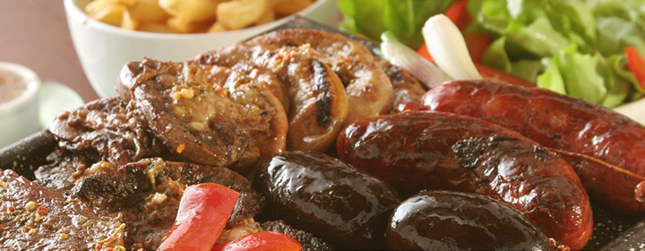
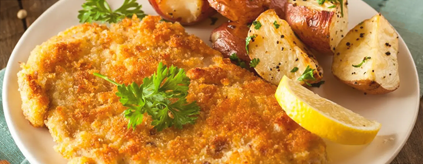
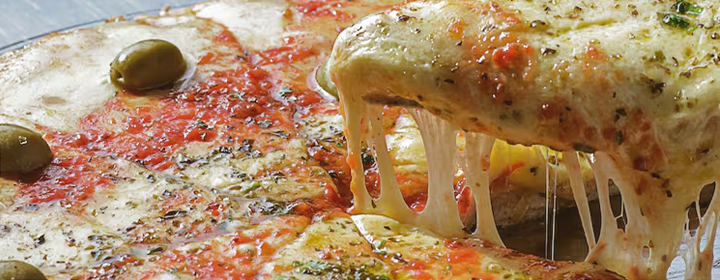
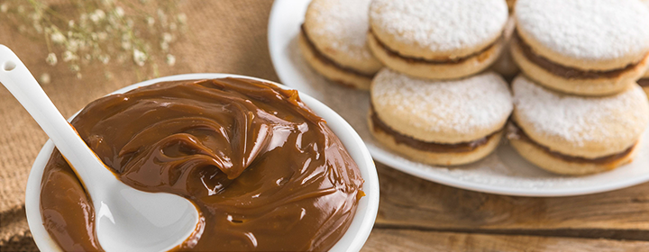

Algunas comidas tradicionales
Asado: Parrillada de carne vacuna, chorizo, morcilla y achuras, cocinada a la leña o carbón.
Humita: Pasta de maíz, queso y condimentos envuelta en chala y cocida al vapor.
Milanesa: Filete de carne empanado y frito, a veces servido con salsa de tomate y queso (napolitana).
Locro: Guiso espeso de maíz, zapallo, porotos, chorizo y carne de cerdo o vacuna.
Pizza: Masa cubierta con salsa de tomate, queso y aceitunas. Llegó a Argentina en el siglo XIX de la mano de los inmigrantes italianos.
Pastelitos: Masa frita rellena de dulce de membrillo o batata, típica en fechas patrias.
Alfajores con dulce de leche: Galletas rellenas de dulce de leche, bañadas en chocolate o glasé.
